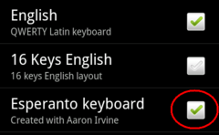
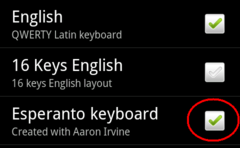

Actuate *AnySoftKeyboard-*on
(below) and later *agordigi it: 
Choose "*Keyboards": 
*Enŝalti the Hoping keyboard:

*Doesen't *speak Esperanto? *Try *the *English version
This program helps you install various baggages, that is interesting for Esperanto-speakers, and help you later use them.
Note: *Depende of the haste of of your *interreta connection, implementation of the baggages can last a bit of time. You maybe must pay each megabyte, that you transfer to your phone.
For write the hoping letters *ĉ, *ĝ, *ĵ etc. you must do the consequent steps:
Install *AnySoftKeyboard
Install the Hoping keyboard for *AnySoftKeyboard
Last you must actuate and choose the keyboard.
Actuate the and choose the keyboard is a bit complex task.
You
must do the consequent steps:
Actuate *AnySoftKeyboard-*on
(below) and later *agordigi it:
Choose "*Keyboards":
*Enŝalti the Hoping keyboard:

Whether you understood?
Well, now click
for actuate the Esperanto-keyboard.
But your efforts yet
did not end.
You must also choose the keyboard for can use
it!
That you do thus:
Click and long keep on
*redaktebla text.
will Appear the *jena menu: 
Choose '*Input *method' and
'*AnySoftKeyboard': 
And later you must alter the
*klavaraspekton to Esperanto: 
And here! Ultimately you can use Hoping keyboard in
your phone!
You can install the dictionaries of Learn!.*net (*DictionaryForMIDs). The Hoping dictionaries are a bit below.
For use Esperanto in the program: Press the *MENUAN button and choose Preferences. Here you choose Language and Esperanto.
*Mejzi the mouse - word in Esperanto of the films about the tiny mouse *Mejzo. Prospect read more or see one from the films.
I solicit you contact me and report.
Jacob *Nordfalk